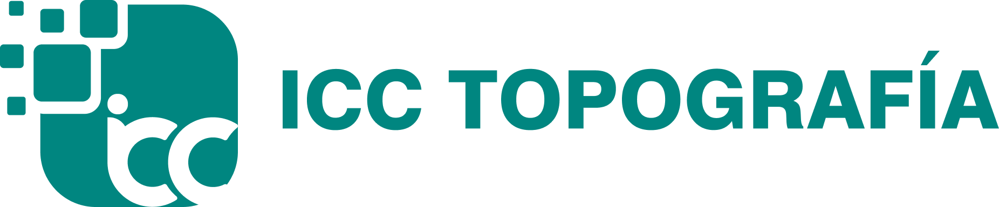
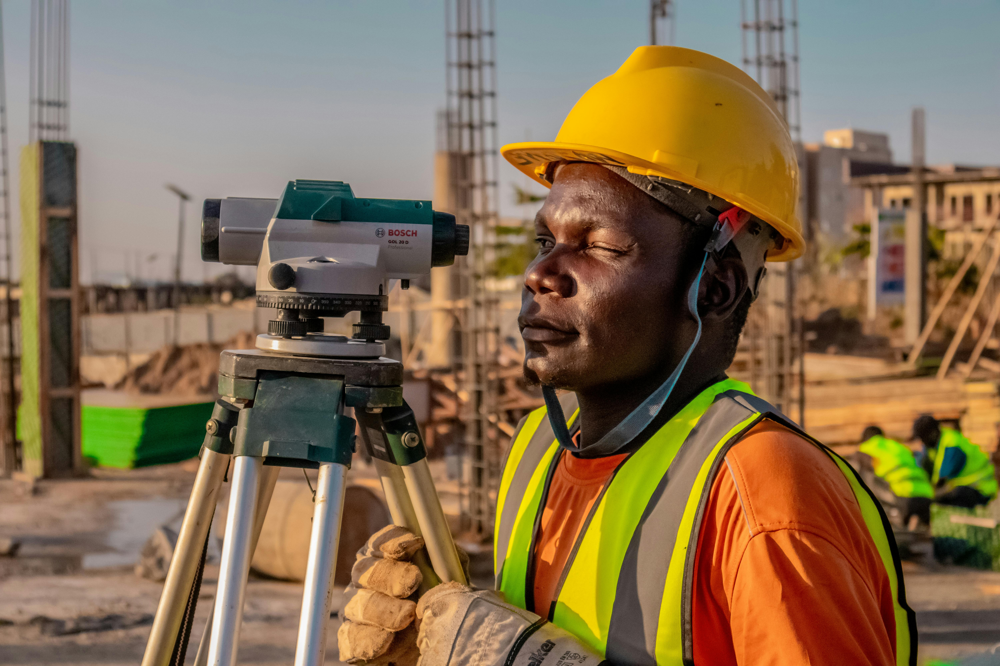

Precision
Mediciones exactas que sustentan cada decision.


Topografia de precision para obras e infraestructura
Levantamiento topografico, LiDAR, control de obra, monitoreo y cartografia SIG con entregables claros, precision verificable y trazabilidad tecnica para proyectos en Peru.
Clientes que confian en nosotros
Trabajamos con empresas lideres que exigen exactitud, control y resultados.
Servicios
Cada ficha explica proceso, equipos, rango de error y entregables para compradores tecnicos que necesitan decidir rapido.
Ver todos los serviciosNuestro compromiso
Combinamos tecnologia, experiencia y procesos rigurosos para garantizar informacion precisa, entregas puntuales y total seguridad en cada proyecto.
Mediciones exactas que sustentan cada decision.
Cumplimos lo que prometemos, siempre a tiempo.
Estandares altos en cada etapa, sin excepciones.
Nos involucramos contigo hasta lograr el mejor resultado.
Protegemos tu informacion y la integridad del proyecto.
Metodo ICC
Convertimos una necesidad topografica en alcance, plan de campo, control QA/QC y entregables listos para supervision, diseno u obra.
Ubicacion, alcance, acceso, entregables y fecha objetivo.
Cuadrilla, equipos, metodologia y control de calidad.
Trabajo de campo, gabinete, QA/QC y registro de evidencia.
Planos, reportes, archivos tecnicos y soporte posterior.
Casos de exito
Tienda tecnica
La tienda se muestra ahora en ICC Topografia. Terraqo queda como workspace/base de datos para administrar productos, cotizaciones y seguimiento comercial.
Cotizacion
La solicitud queda preparada para entrar como oportunidad en Terraqo con etiquetas de servicio, obra y posible interes en equipos.